Run result: useful_improvement.
C++ is the pinned RapidYenc baseline; Rust is the built candidate. Identical synthetic article fixtures execute real YencService and memory-backed NNTP BODY calls. This paired comparison does not measure network, database, archive metadata or production throughput.
Speedup = C++ time / Rust time. 1× means equal time. Time saved = 100 × (1 − Rust time / C++ time). Decisions and simultaneous confidence intervals come from the uninstrumented paired benchmark; inconclusive estimates do not establish a gain.
| Stratum | Decision | Speedup | 95% speedup interval | Time saved | Eligible / invalid |
|---|---|---|---|---|---|
| 4096 B / ordinary / tolerant | useful_improvement | 1.154× | 1.129–1.193× | 13.32% | 31 / 0 |
| 4096 B / ordinary / strict | useful_improvement | 1.146× | 1.101–1.182× | 12.73% | 31 / 0 |
| 4096 B / ordinary / body | useful_improvement | 1.091× | 1.068–1.120× | 8.31% | 31 / 0 |
| 4096 B / heavy / tolerant | useful_improvement | 1.214× | 1.196–1.246× | 17.63% | 31 / 0 |
| 4096 B / heavy / strict | useful_improvement | 1.193× | 1.173–1.209× | 16.16% | 31 / 0 |
| 4096 B / heavy / body | useful_improvement | 1.106× | 1.086–1.119× | 9.60% | 31 / 0 |
| 524288 B / ordinary / tolerant | useful_improvement | 1.299× | 1.268–1.353× | 23.00% | 31 / 0 |
| 524288 B / ordinary / strict | useful_improvement | 1.310× | 1.286–1.399× | 23.67% | 31 / 0 |
| 524288 B / ordinary / body | useful_improvement | 1.163× | 1.122–1.188× | 14.00% | 31 / 0 |
| 524288 B / heavy / tolerant | useful_improvement | 1.537× | 1.478–1.559× | 34.92% | 31 / 0 |
| 524288 B / heavy / strict | useful_improvement | 1.554× | 1.479–1.576× | 35.64% | 31 / 0 |
| 524288 B / heavy / body | useful_improvement | 1.125× | 1.109–1.147× | 11.15% | 31 / 0 |
| 1048576 B / ordinary / tolerant | useful_improvement | 1.490× | 1.421–1.518× | 32.88% | 31 / 0 |
| 1048576 B / ordinary / strict | useful_improvement | 1.464× | 1.431–1.541× | 31.69% | 31 / 0 |
| 1048576 B / ordinary / body | useful_improvement | 1.115× | 1.087–1.135× | 10.28% | 31 / 0 |
| 1048576 B / heavy / tolerant | useful_improvement | 1.441× | 1.429–1.469× | 30.59% | 31 / 0 |
| 1048576 B / heavy / strict | useful_improvement | 1.455× | 1.442–1.475× | 31.26% | 31 / 0 |
| 1048576 B / heavy / body | useful_improvement | 1.097× | 1.086–1.126× | 8.82% | 31 / 0 |
| 8388608 B / ordinary / tolerant | useful_improvement | 1.477× | 1.462–1.489× | 32.29% | 31 / 0 |
| 8388608 B / ordinary / strict | useful_improvement | 1.513× | 1.497–1.552× | 33.90% | 31 / 0 |
| 8388608 B / ordinary / body | useful_improvement | 1.066× | 1.059–1.080× | 6.18% | 31 / 0 |
| 8388608 B / heavy / tolerant | useful_improvement | 1.509× | 1.490–1.521× | 33.75% | 31 / 0 |
| 8388608 B / heavy / strict | useful_improvement | 1.540× | 1.519–1.557× | 35.08% | 31 / 0 |
| 8388608 B / heavy / body | useful_improvement | 1.072× | 1.056–1.079× | 6.69% | 31 / 0 |
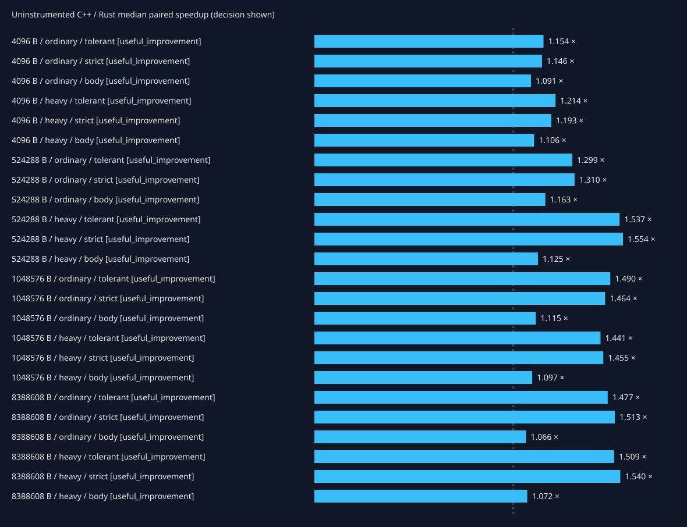
The separate Rust-only metadata workload executes NzbFingerprintAnalyzer and native RAR5/NNTP metadata parsing over a fixed verified archive-header fixture. It has no C++ counterpart and supplies no migration speedup estimate.
Xdebug profiles include process bootstrap, fixture setup, warmup, decoding and correctness checks. Exclusive function time is shown below; inclusive call-edge cost is listed separately and must not be added across edges. FFI calls are opaque here; native internals appear in the separate CPU sampling flamegraphs. Instrumentation changes cost and these numbers are not speedup measurements.
Profiling setup/run receipt: {"exit_code": 0, "phase": "native-build-and-capture", "script_receipt": {"exit_code": 0, "phase": "capture-summary", "status": "complete"}, "status": "complete"}
Total exclusive profiled cost: 1423.904 ms.
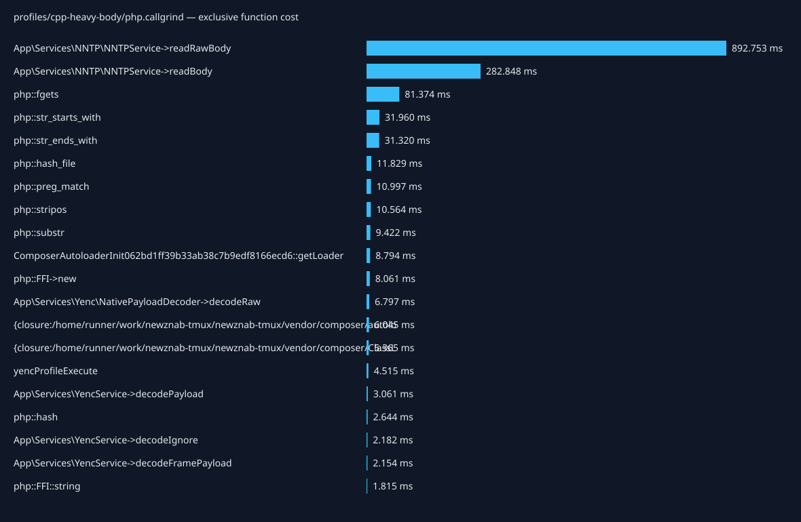
| Caller → callee | Calls | Inclusive cost (ms) |
|---|---|---|
| {main} → yencProfileExecute | 1 | 1392.360 |
| yencProfileExecute → Tests\Support\YencNntpHarness->fetch | 101 | 1382.342 |
| Tests\Support\YencNntpHarness->fetch → App\Services\NNTP\NNTPService->_getMessageByMessageID | 101 | 1381.808 |
| App\Services\NNTP\NNTPService->_getMessageByMessageID → App\Services\NNTP\NNTPService->readBody | 101 | 1380.283 |
| App\Services\NNTP\NNTPService->readBody → App\Services\NNTP\NNTPService->readRawBody | 101 | 1037.601 |
| App\Services\NNTP\NNTPService->readRawBody → php::fgets | 827695 | 81.374 |
| App\Services\NNTP\NNTPService->readBody → App\Services\YencService->decodeIgnore | 101 | 59.817 |
| App\Services\YencService->decodeIgnore → App\Services\YencService->decodeFramePayload | 101 | 42.556 |
| App\Services\NNTP\NNTPService->readRawBody → php::str_starts_with | 827594 | 31.959 |
| App\Services\NNTP\NNTPService->readRawBody → php::str_ends_with | 827695 | 31.300 |
| App\Services\YencService->decodeFramePayload → App\Services\YencService->decodePayload | 101 | 30.681 |
| {main} → require::/home/runner/work/newznab-tmux/newznab-tmux/vendor/autoload.php | 1 | 17.116 |
| require::/home/runner/work/newznab-tmux/newznab-tmux/vendor/autoload.php → ComposerAutoloaderInit062bd1ff39b33ab38c7b9edf8166ecd6::getLoader | 1 | 17.034 |
| App\Services\YencService->decodePayload → App\Services\Yenc\NativePayloadDecoder->decodeRaw | 101 | 16.666 |
| App\Services\YencService->decodeIgnore → App\Services\Yenc\ArticleFrame::parse | 101 | 14.923 |
| {main} → php::hash_file | 14 | 11.829 |
| App\Services\Yenc\ArticleFrame::parse → App\Services\Yenc\ArticleFrame::findControl | 303 | 11.776 |
| App\Services\YencService->decodePayload → php::preg_match | 101 | 10.921 |
| App\Services\Yenc\ArticleFrame::findControl → php::stripos | 202 | 10.564 |
| Composer\Autoload\ClassLoader->loadClass → {closure:/home/runner/work/newznab-tmux/newznab-tmux/vendor/composer/ClassLoader.php:575-577} | 25 | 9.507 |
| App\Services\YencService->decodeFramePayload → App\Services\YencService->payloadSlice | 101 | 9.501 |
| App\Services\YencService->payloadSlice → php::substr | 101 | 9.377 |
| App\Services\Yenc\NativePayloadDecoder->decodeRaw → php::FFI->new | 102 | 8.061 |
| ComposerAutoloaderInit062bd1ff39b33ab38c7b9edf8166ecd6::getLoader → {closure:/home/runner/work/newznab-tmux/newznab-tmux/vendor/composer/autoload_real.php:37-43} | 51 | 7.997 |
| yencProfileExecute → Composer\Autoload\ClassLoader->loadClass | 1 | 2.390 |
| {closure:/home/runner/work/newznab-tmux/newznab-tmux/vendor/composer/ClassLoader.php:575-577} → include::/home/runner/work/newznab-tmux/newznab-tmux/tests/Support/YencNntpHarness.php | 1 | 2.323 |
| include::/home/runner/work/newznab-tmux/newznab-tmux/tests/Support/YencNntpHarness.php → Composer\Autoload\ClassLoader->loadClass | 1 | 2.318 |
| App\Services\Yenc\NativePayloadDecoder->decodeRaw → php::FFI::string | 102 | 1.815 |
| yencProfileExecute → php::hash | 3 | 1.650 |
| {main} → php::ReflectionClass->__construct | 9 | 1.417 |
Total exclusive profiled cost: 91.138 ms.
| Caller → callee | Calls | Inclusive cost (ms) |
|---|---|---|
| {main} → yencProfileExecute | 1 | 56.773 |
| yencProfileExecute → App\Services\YencService->decode | 101 | 50.214 |
| App\Services\YencService->decode → App\Services\YencService->decodeFramePayload | 101 | 32.326 |
| App\Services\YencService->decodeFramePayload → App\Services\YencService->decodePayload | 101 | 25.233 |
| {main} → require::/home/runner/work/newznab-tmux/newznab-tmux/vendor/autoload.php | 1 | 17.163 |
| require::/home/runner/work/newznab-tmux/newznab-tmux/vendor/autoload.php → ComposerAutoloaderInit062bd1ff39b33ab38c7b9edf8166ecd6::getLoader | 1 | 17.079 |
| App\Services\YencService->decode → App\Services\Yenc\ArticleFrame::parse | 101 | 13.531 |
| App\Services\YencService->decodePayload → App\Services\Yenc\NativePayloadDecoder->decodeRaw | 101 | 12.624 |
| {main} → php::hash_file | 14 | 11.883 |
| App\Services\Yenc\ArticleFrame::parse → App\Services\Yenc\ArticleFrame::findControl | 303 | 11.274 |
| App\Services\YencService->decodePayload → php::preg_match | 101 | 10.929 |
| App\Services\Yenc\ArticleFrame::findControl → php::stripos | 202 | 10.546 |
| ComposerAutoloaderInit062bd1ff39b33ab38c7b9edf8166ecd6::getLoader → {closure:/home/runner/work/newznab-tmux/newznab-tmux/vendor/composer/autoload_real.php:37-43} | 51 | 8.002 |
| Composer\Autoload\ClassLoader->loadClass → {closure:/home/runner/work/newznab-tmux/newznab-tmux/vendor/composer/ClassLoader.php:575-577} | 23 | 7.261 |
| App\Services\YencService->decodeFramePayload → App\Services\YencService->payloadSlice | 101 | 6.541 |
| App\Services\YencService->payloadSlice → php::substr | 101 | 6.450 |
| App\Services\Yenc\NativePayloadDecoder->decodeRaw → php::FFI->new | 102 | 5.235 |
| {main} → php::ReflectionClass->__construct | 9 | 4.002 |
| php::ReflectionClass->__construct → Composer\Autoload\ClassLoader->loadClass | 5 | 3.976 |
| App\Services\YencService->decode → App\Services\YencService->crc32 | 101 | 2.168 |
| App\Services\YencService->crc32 → App\Services\Yenc\NativePayloadDecoder->crc32 | 101 | 2.037 |
| App\Services\Yenc\NativePayloadDecoder->decodeRaw → php::FFI::string | 102 | 1.297 |
| yencProfileExecute → yencProfileLoadFixture | 1 | 1.239 |
| {closure:/home/runner/work/newznab-tmux/newznab-tmux/vendor/composer/ClassLoader.php:575-577} → include::/home/runner/work/newznab-tmux/newznab-tmux/app/Services/NNTP/NNTPService.php | 1 | 1.046 |
| include::/home/runner/work/newznab-tmux/newznab-tmux/app/Services/NNTP/NNTPService.php → Composer\Autoload\ClassLoader->loadClass | 1 | 1.040 |
| yencProfileLoadFixture → php::hash | 2 | 0.983 |
| yencProfileExecute → php::hash | 2 | 0.977 |
| App\Services\YencService->decode → App\Services\YencService->number | 202 | 0.841 |
| App\Services\Yenc\ArticleFrame::parse → App\Services\Yenc\ArticleFrame::fields | 202 | 0.797 |
| {closure:/home/runner/work/newznab-tmux/newznab-tmux/vendor/composer/ClassLoader.php:575-577} → include::/home/runner/work/newznab-tmux/newznab-tmux/vendor/dariusiii/net_nntp/src/Client.php | 1 | 0.710 |
Total exclusive profiled cost: 86.901 ms.
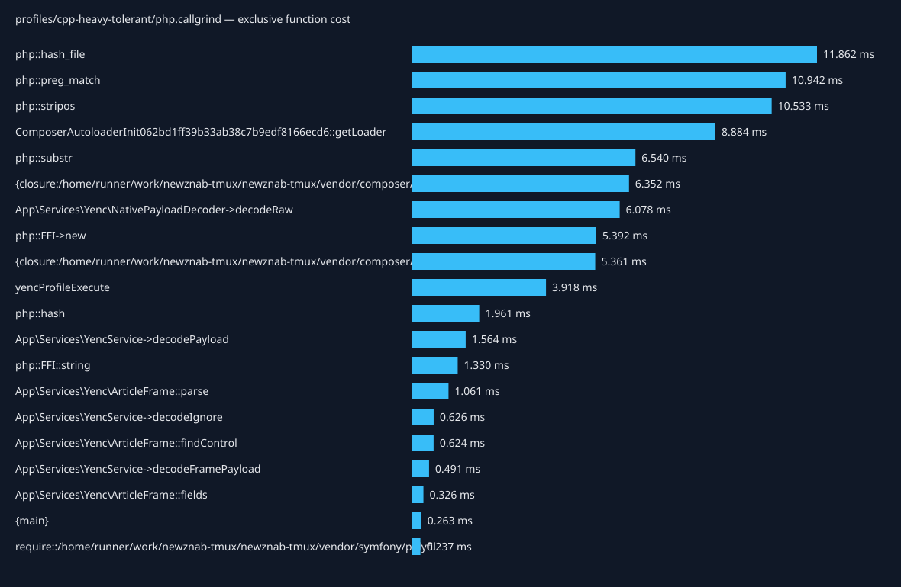
| Caller → callee | Calls | Inclusive cost (ms) |
|---|---|---|
| {main} → yencProfileExecute | 1 | 52.156 |
| yencProfileExecute → App\Services\YencService->decodeIgnore | 101 | 46.042 |
| App\Services\YencService->decodeIgnore → App\Services\YencService->decodeFramePayload | 101 | 32.440 |
| App\Services\YencService->decodeFramePayload → App\Services\YencService->decodePayload | 101 | 25.232 |
| {main} → require::/home/runner/work/newznab-tmux/newznab-tmux/vendor/autoload.php | 1 | 17.541 |
| require::/home/runner/work/newznab-tmux/newznab-tmux/vendor/autoload.php → ComposerAutoloaderInit062bd1ff39b33ab38c7b9edf8166ecd6::getLoader | 1 | 17.456 |
| App\Services\YencService->decodeIgnore → App\Services\Yenc\ArticleFrame::parse | 101 | 12.845 |
| App\Services\YencService->decodePayload → App\Services\Yenc\NativePayloadDecoder->decodeRaw | 101 | 12.792 |
| {main} → php::hash_file | 14 | 11.862 |
| App\Services\Yenc\ArticleFrame::parse → App\Services\Yenc\ArticleFrame::findControl | 303 | 11.215 |
| App\Services\YencService->decodePayload → php::preg_match | 101 | 10.864 |
| App\Services\Yenc\ArticleFrame::findControl → php::stripos | 202 | 10.533 |
| ComposerAutoloaderInit062bd1ff39b33ab38c7b9edf8166ecd6::getLoader → {closure:/home/runner/work/newznab-tmux/newznab-tmux/vendor/composer/autoload_real.php:37-43} | 51 | 8.312 |
| Composer\Autoload\ClassLoader->loadClass → {closure:/home/runner/work/newznab-tmux/newznab-tmux/vendor/composer/ClassLoader.php:575-577} | 23 | 7.275 |
| App\Services\YencService->decodeFramePayload → App\Services\YencService->payloadSlice | 101 | 6.606 |
| App\Services\YencService->payloadSlice → php::substr | 101 | 6.521 |
| App\Services\Yenc\NativePayloadDecoder->decodeRaw → php::FFI->new | 102 | 5.392 |
| {main} → php::ReflectionClass->__construct | 9 | 3.957 |
| php::ReflectionClass->__construct → Composer\Autoload\ClassLoader->loadClass | 5 | 3.942 |
| App\Services\Yenc\NativePayloadDecoder->decodeRaw → php::FFI::string | 102 | 1.330 |
| yencProfileExecute → yencProfileLoadFixture | 1 | 1.219 |
| {closure:/home/runner/work/newznab-tmux/newznab-tmux/vendor/composer/ClassLoader.php:575-577} → include::/home/runner/work/newznab-tmux/newznab-tmux/app/Services/NNTP/NNTPService.php | 1 | 1.049 |
| include::/home/runner/work/newznab-tmux/newznab-tmux/app/Services/NNTP/NNTPService.php → Composer\Autoload\ClassLoader->loadClass | 1 | 1.044 |
| yencProfileLoadFixture → php::hash | 2 | 0.985 |
| yencProfileExecute → php::hash | 2 | 0.977 |
| {closure:/home/runner/work/newznab-tmux/newznab-tmux/vendor/composer/ClassLoader.php:575-577} → include::/home/runner/work/newznab-tmux/newznab-tmux/vendor/dariusiii/net_nntp/src/Client.php | 1 | 0.696 |
| include::/home/runner/work/newznab-tmux/newznab-tmux/vendor/dariusiii/net_nntp/src/Client.php → Composer\Autoload\ClassLoader->loadClass | 1 | 0.689 |
| {main} → App\Services\Yenc\DecoderFactory->make | 1 | 0.592 |
| {closure:/home/runner/work/newznab-tmux/newznab-tmux/vendor/composer/autoload_real.php:37-43} → require::/home/runner/work/newznab-tmux/newznab-tmux/vendor/nunomaduro/collision/src/Adapters/Phpunit/Autoload.php | 1 | 0.505 |
| App\Services\Yenc\ArticleFrame::parse → App\Services\Yenc\ArticleFrame::fields | 101 | 0.485 |
Total exclusive profiled cost: 739.354 ms.
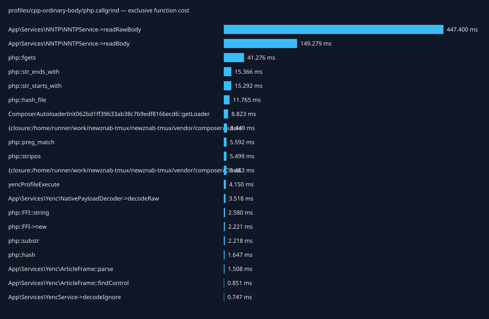
| Caller → callee | Calls | Inclusive cost (ms) |
|---|---|---|
| {main} → yencProfileExecute | 1 | 707.083 |
| yencProfileExecute → Tests\Support\YencNntpHarness->fetch | 101 | 698.376 |
| Tests\Support\YencNntpHarness->fetch → App\Services\NNTP\NNTPService->_getMessageByMessageID | 101 | 697.891 |
| App\Services\NNTP\NNTPService->_getMessageByMessageID → App\Services\NNTP\NNTPService->readBody | 101 | 696.517 |
| App\Services\NNTP\NNTPService->readBody → App\Services\NNTP\NNTPService->readRawBody | 101 | 519.423 |
| App\Services\NNTP\NNTPService->readRawBody → php::fgets | 420463 | 41.276 |
| App\Services\NNTP\NNTPService->readBody → App\Services\YencService->decodeIgnore | 101 | 27.799 |
| {main} → require::/home/runner/work/newznab-tmux/newznab-tmux/vendor/autoload.php | 1 | 17.682 |
| App\Services\YencService->decodeIgnore → App\Services\YencService->decodeFramePayload | 101 | 17.662 |
| require::/home/runner/work/newznab-tmux/newznab-tmux/vendor/autoload.php → ComposerAutoloaderInit062bd1ff39b33ab38c7b9edf8166ecd6::getLoader | 1 | 17.591 |
| App\Services\NNTP\NNTPService->readRawBody → php::str_ends_with | 420463 | 15.349 |
| App\Services\NNTP\NNTPService->readRawBody → php::str_starts_with | 420362 | 15.291 |
| App\Services\YencService->decodeFramePayload → App\Services\YencService->decodePayload | 101 | 14.405 |
| {main} → php::hash_file | 14 | 11.765 |
| Composer\Autoload\ClassLoader->loadClass → {closure:/home/runner/work/newznab-tmux/newznab-tmux/vendor/composer/ClassLoader.php:575-577} | 25 | 9.652 |
| App\Services\YencService->decodeIgnore → App\Services\Yenc\ArticleFrame::parse | 101 | 9.176 |
| ComposerAutoloaderInit062bd1ff39b33ab38c7b9edf8166ecd6::getLoader → {closure:/home/runner/work/newznab-tmux/newznab-tmux/vendor/composer/autoload_real.php:37-43} | 51 | 8.510 |
| App\Services\YencService->decodePayload → App\Services\Yenc\NativePayloadDecoder->decodeRaw | 101 | 8.292 |
| App\Services\Yenc\ArticleFrame::parse → App\Services\Yenc\ArticleFrame::findControl | 303 | 6.466 |
| App\Services\YencService->decodePayload → php::preg_match | 101 | 5.504 |
| App\Services\Yenc\ArticleFrame::findControl → php::stripos | 202 | 5.499 |
| App\Services\Yenc\NativePayloadDecoder->decodeRaw → php::FFI::string | 102 | 2.580 |
| yencProfileExecute → Composer\Autoload\ClassLoader->loadClass | 1 | 2.423 |
| {closure:/home/runner/work/newznab-tmux/newznab-tmux/vendor/composer/ClassLoader.php:575-577} → include::/home/runner/work/newznab-tmux/newznab-tmux/tests/Support/YencNntpHarness.php | 1 | 2.352 |
| include::/home/runner/work/newznab-tmux/newznab-tmux/tests/Support/YencNntpHarness.php → Composer\Autoload\ClassLoader->loadClass | 1 | 2.348 |
| App\Services\YencService->decodeFramePayload → App\Services\YencService->payloadSlice | 101 | 2.305 |
| App\Services\Yenc\NativePayloadDecoder->decodeRaw → php::FFI->new | 102 | 2.221 |
| App\Services\YencService->payloadSlice → php::substr | 101 | 2.184 |
| {main} → php::ReflectionClass->__construct | 9 | 1.449 |
| php::ReflectionClass->__construct → Composer\Autoload\ClassLoader->loadClass | 3 | 1.437 |
Total exclusive profiled cost: 64.583 ms.
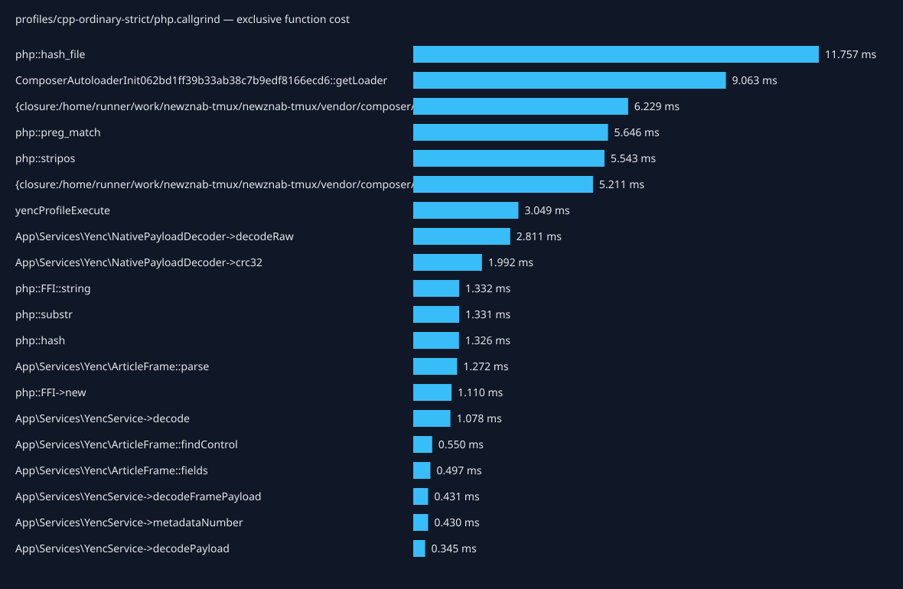
| Caller → callee | Calls | Inclusive cost (ms) |
|---|---|---|
| {main} → yencProfileExecute | 1 | 30.027 |
| yencProfileExecute → App\Services\YencService->decode | 101 | 25.456 |
| {main} → require::/home/runner/work/newznab-tmux/newznab-tmux/vendor/autoload.php | 1 | 17.614 |
| require::/home/runner/work/newznab-tmux/newznab-tmux/vendor/autoload.php → ComposerAutoloaderInit062bd1ff39b33ab38c7b9edf8166ecd6::getLoader | 1 | 17.529 |
| App\Services\YencService->decode → App\Services\YencService->decodeFramePayload | 101 | 13.015 |
| {main} → php::hash_file | 14 | 11.757 |
| App\Services\YencService->decodeFramePayload → App\Services\YencService->decodePayload | 101 | 11.128 |
| App\Services\YencService->decode → App\Services\Yenc\ArticleFrame::parse | 101 | 8.232 |
| ComposerAutoloaderInit062bd1ff39b33ab38c7b9edf8166ecd6::getLoader → {closure:/home/runner/work/newznab-tmux/newznab-tmux/vendor/composer/autoload_real.php:37-43} | 51 | 8.177 |
| Composer\Autoload\ClassLoader->loadClass → {closure:/home/runner/work/newznab-tmux/newznab-tmux/vendor/composer/ClassLoader.php:575-577} | 23 | 7.096 |
| App\Services\Yenc\ArticleFrame::parse → App\Services\Yenc\ArticleFrame::findControl | 303 | 6.144 |
| App\Services\Yenc\ArticleFrame::findControl → php::stripos | 202 | 5.543 |
| App\Services\YencService->decodePayload → php::preg_match | 101 | 5.529 |
| App\Services\YencService->decodePayload → App\Services\Yenc\NativePayloadDecoder->decodeRaw | 101 | 5.243 |
| {main} → php::ReflectionClass->__construct | 9 | 3.843 |
| php::ReflectionClass->__construct → Composer\Autoload\ClassLoader->loadClass | 5 | 3.830 |
| App\Services\YencService->decode → App\Services\YencService->crc32 | 101 | 2.138 |
| App\Services\YencService->crc32 → App\Services\Yenc\NativePayloadDecoder->crc32 | 101 | 2.004 |
| App\Services\YencService->decodeFramePayload → App\Services\YencService->payloadSlice | 101 | 1.375 |
| App\Services\Yenc\NativePayloadDecoder->decodeRaw → php::FFI::string | 102 | 1.332 |
| App\Services\YencService->payloadSlice → php::substr | 101 | 1.308 |
| App\Services\Yenc\NativePayloadDecoder->decodeRaw → php::FFI->new | 102 | 1.110 |
| {closure:/home/runner/work/newznab-tmux/newznab-tmux/vendor/composer/ClassLoader.php:575-577} → include::/home/runner/work/newznab-tmux/newznab-tmux/app/Services/NNTP/NNTPService.php | 1 | 1.019 |
| include::/home/runner/work/newznab-tmux/newznab-tmux/app/Services/NNTP/NNTPService.php → Composer\Autoload\ClassLoader->loadClass | 1 | 1.013 |
| yencProfileExecute → yencProfileLoadFixture | 1 | 0.861 |
| App\Services\YencService->decode → App\Services\YencService->number | 202 | 0.807 |
| App\Services\Yenc\ArticleFrame::parse → App\Services\Yenc\ArticleFrame::fields | 202 | 0.733 |
| {closure:/home/runner/work/newznab-tmux/newznab-tmux/vendor/composer/ClassLoader.php:575-577} → include::/home/runner/work/newznab-tmux/newznab-tmux/vendor/dariusiii/net_nntp/src/Client.php | 1 | 0.686 |
| include::/home/runner/work/newznab-tmux/newznab-tmux/vendor/dariusiii/net_nntp/src/Client.php → Composer\Autoload\ClassLoader->loadClass | 1 | 0.679 |
| yencProfileLoadFixture → php::hash | 2 | 0.665 |
Total exclusive profiled cost: 60.605 ms.
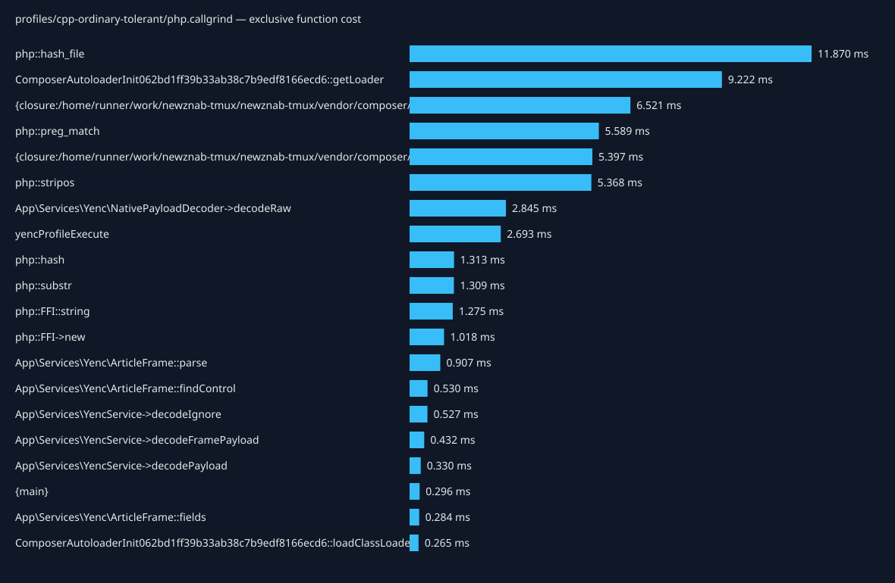
| Caller → callee | Calls | Inclusive cost (ms) |
|---|---|---|
| {main} → yencProfileExecute | 1 | 25.108 |
| yencProfileExecute → App\Services\YencService->decodeIgnore | 101 | 20.898 |
| {main} → require::/home/runner/work/newznab-tmux/newznab-tmux/vendor/autoload.php | 1 | 18.162 |
| require::/home/runner/work/newznab-tmux/newznab-tmux/vendor/autoload.php → ComposerAutoloaderInit062bd1ff39b33ab38c7b9edf8166ecd6::getLoader | 1 | 18.067 |
| App\Services\YencService->decodeIgnore → App\Services\YencService->decodeFramePayload | 101 | 12.849 |
| {main} → php::hash_file | 14 | 11.870 |
| App\Services\YencService->decodeFramePayload → App\Services\YencService->decodePayload | 101 | 10.971 |
| ComposerAutoloaderInit062bd1ff39b33ab38c7b9edf8166ecd6::getLoader → {closure:/home/runner/work/newznab-tmux/newznab-tmux/vendor/composer/autoload_real.php:37-43} | 51 | 8.543 |
| App\Services\YencService->decodeIgnore → App\Services\Yenc\ArticleFrame::parse | 101 | 7.377 |
| Composer\Autoload\ClassLoader->loadClass → {closure:/home/runner/work/newznab-tmux/newznab-tmux/vendor/composer/ClassLoader.php:575-577} | 23 | 7.301 |
| App\Services\Yenc\ArticleFrame::parse → App\Services\Yenc\ArticleFrame::findControl | 303 | 5.948 |
| App\Services\YencService->decodePayload → php::preg_match | 101 | 5.506 |
| App\Services\Yenc\ArticleFrame::findControl → php::stripos | 202 | 5.368 |
| App\Services\YencService->decodePayload → App\Services\Yenc\NativePayloadDecoder->decodeRaw | 101 | 5.125 |
| {main} → php::ReflectionClass->__construct | 9 | 3.986 |
| php::ReflectionClass->__construct → Composer\Autoload\ClassLoader->loadClass | 5 | 3.970 |
| App\Services\YencService->decodeFramePayload → App\Services\YencService->payloadSlice | 101 | 1.361 |
| App\Services\YencService->payloadSlice → php::substr | 101 | 1.291 |
| App\Services\Yenc\NativePayloadDecoder->decodeRaw → php::FFI::string | 102 | 1.275 |
| {closure:/home/runner/work/newznab-tmux/newznab-tmux/vendor/composer/ClassLoader.php:575-577} → include::/home/runner/work/newznab-tmux/newznab-tmux/app/Services/NNTP/NNTPService.php | 1 | 1.037 |
| include::/home/runner/work/newznab-tmux/newznab-tmux/app/Services/NNTP/NNTPService.php → Composer\Autoload\ClassLoader->loadClass | 1 | 1.030 |
| App\Services\Yenc\NativePayloadDecoder->decodeRaw → php::FFI->new | 102 | 1.018 |
| yencProfileExecute → yencProfileLoadFixture | 1 | 0.858 |
| {closure:/home/runner/work/newznab-tmux/newznab-tmux/vendor/composer/ClassLoader.php:575-577} → include::/home/runner/work/newznab-tmux/newznab-tmux/vendor/dariusiii/net_nntp/src/Client.php | 1 | 0.690 |
| include::/home/runner/work/newznab-tmux/newznab-tmux/vendor/dariusiii/net_nntp/src/Client.php → Composer\Autoload\ClassLoader->loadClass | 1 | 0.683 |
| yencProfileExecute → php::hash | 2 | 0.659 |
| yencProfileLoadFixture → php::hash | 2 | 0.654 |
| {main} → App\Services\Yenc\DecoderFactory->make | 1 | 0.638 |
| {closure:/home/runner/work/newznab-tmux/newznab-tmux/vendor/composer/autoload_real.php:37-43} → require::/home/runner/work/newznab-tmux/newznab-tmux/vendor/nunomaduro/collision/src/Adapters/Phpunit/Autoload.php | 1 | 0.489 |
| App\Services\Yenc\ArticleFrame::parse → App\Services\Yenc\ArticleFrame::fields | 101 | 0.451 |
Total exclusive profiled cost: 1430.930 ms.
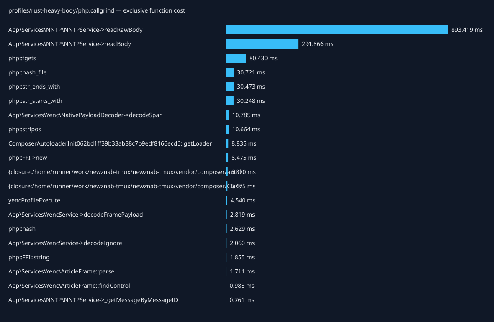
| Caller → callee | Calls | Inclusive cost (ms) |
|---|---|---|
| {main} → yencProfileExecute | 1 | 1379.974 |
| yencProfileExecute → Tests\Support\YencNntpHarness->fetch | 101 | 1369.846 |
| Tests\Support\YencNntpHarness->fetch → App\Services\NNTP\NNTPService->_getMessageByMessageID | 101 | 1369.427 |
| App\Services\NNTP\NNTPService->_getMessageByMessageID → App\Services\NNTP\NNTPService->readBody | 101 | 1367.966 |
| App\Services\NNTP\NNTPService->readBody → App\Services\NNTP\NNTPService->readRawBody | 101 | 1034.761 |
| App\Services\NNTP\NNTPService->readRawBody → php::fgets | 827695 | 80.430 |
| App\Services\NNTP\NNTPService->readBody → App\Services\YencService->decodeIgnore | 101 | 41.321 |
| {main} → php::hash_file | 14 | 30.721 |
| App\Services\NNTP\NNTPService->readRawBody → php::str_ends_with | 827695 | 30.455 |
| App\Services\NNTP\NNTPService->readRawBody → php::str_starts_with | 827594 | 30.248 |
| App\Services\YencService->decodeIgnore → App\Services\YencService->decodeFramePayload | 101 | 24.125 |
| App\Services\YencService->decodeFramePayload → App\Services\Yenc\NativePayloadDecoder->decodeSpan | 101 | 21.115 |
| {main} → require::/home/runner/work/newznab-tmux/newznab-tmux/vendor/autoload.php | 1 | 17.507 |
| require::/home/runner/work/newznab-tmux/newznab-tmux/vendor/autoload.php → ComposerAutoloaderInit062bd1ff39b33ab38c7b9edf8166ecd6::getLoader | 1 | 17.419 |
| App\Services\YencService->decodeIgnore → App\Services\Yenc\ArticleFrame::parse | 101 | 14.919 |
| App\Services\Yenc\ArticleFrame::parse → App\Services\Yenc\ArticleFrame::findControl | 303 | 11.785 |
| App\Services\Yenc\ArticleFrame::findControl → php::stripos | 202 | 10.664 |
| Composer\Autoload\ClassLoader->loadClass → {closure:/home/runner/work/newznab-tmux/newznab-tmux/vendor/composer/ClassLoader.php:575-577} | 25 | 9.736 |
| App\Services\Yenc\NativePayloadDecoder->decodeSpan → php::FFI->new | 101 | 8.470 |
| ComposerAutoloaderInit062bd1ff39b33ab38c7b9edf8166ecd6::getLoader → {closure:/home/runner/work/newznab-tmux/newznab-tmux/vendor/composer/autoload_real.php:37-43} | 51 | 8.331 |
| yencProfileExecute → Composer\Autoload\ClassLoader->loadClass | 1 | 2.470 |
| {closure:/home/runner/work/newznab-tmux/newznab-tmux/vendor/composer/ClassLoader.php:575-577} → include::/home/runner/work/newznab-tmux/newznab-tmux/tests/Support/YencNntpHarness.php | 1 | 2.405 |
| include::/home/runner/work/newznab-tmux/newznab-tmux/tests/Support/YencNntpHarness.php → Composer\Autoload\ClassLoader->loadClass | 1 | 2.401 |
| App\Services\Yenc\NativePayloadDecoder->decodeSpan → php::FFI::string | 101 | 1.854 |
| yencProfileExecute → php::hash | 3 | 1.644 |
| {main} → php::ReflectionClass->__construct | 9 | 1.423 |
| php::ReflectionClass->__construct → Composer\Autoload\ClassLoader->loadClass | 3 | 1.412 |
| App\Services\Yenc\ArticleFrame::parse → App\Services\Yenc\ArticleFrame::fields | 101 | 1.216 |
| yencProfileExecute → yencProfileLoadFixture | 1 | 1.207 |
| {closure:/home/runner/work/newznab-tmux/newznab-tmux/vendor/composer/ClassLoader.php:575-577} → include::/home/runner/work/newznab-tmux/newznab-tmux/app/Services/NNTP/NNTPService.php | 1 | 1.004 |
Total exclusive profiled cost: 88.696 ms.
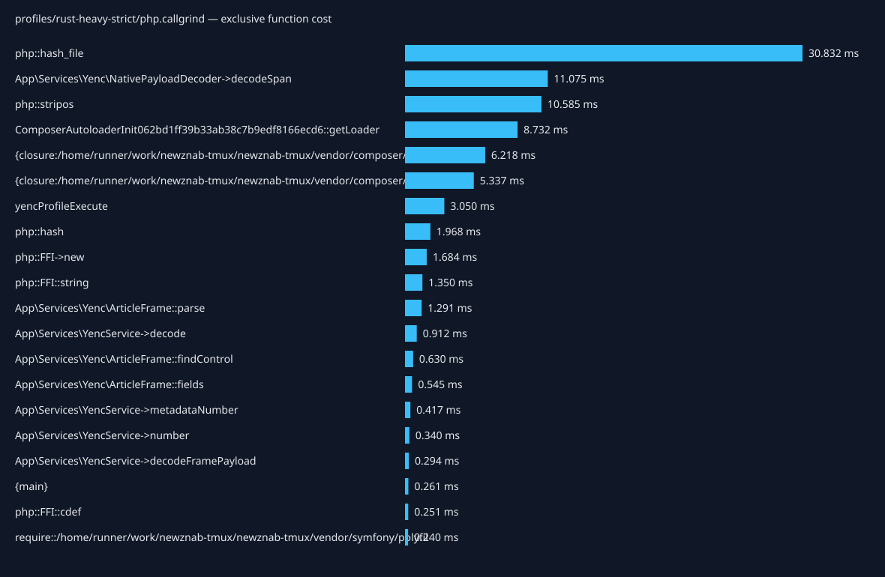
| Caller → callee | Calls | Inclusive cost (ms) |
|---|---|---|
| {main} → yencProfileExecute | 1 | 35.108 |
| {main} → php::hash_file | 14 | 30.832 |
| yencProfileExecute → App\Services\YencService->decode | 101 | 29.868 |
| {main} → require::/home/runner/work/newznab-tmux/newznab-tmux/vendor/autoload.php | 1 | 17.243 |
| require::/home/runner/work/newznab-tmux/newznab-tmux/vendor/autoload.php → ComposerAutoloaderInit062bd1ff39b33ab38c7b9edf8166ecd6::getLoader | 1 | 17.157 |
| App\Services\YencService->decode → App\Services\YencService->decodeFramePayload | 101 | 14.490 |
| App\Services\YencService->decodeFramePayload → App\Services\Yenc\NativePayloadDecoder->decodeSpan | 101 | 14.124 |
| App\Services\YencService->decode → App\Services\Yenc\ArticleFrame::parse | 101 | 13.456 |
| App\Services\Yenc\ArticleFrame::parse → App\Services\Yenc\ArticleFrame::findControl | 303 | 11.269 |
| App\Services\Yenc\ArticleFrame::findControl → php::stripos | 202 | 10.585 |
| ComposerAutoloaderInit062bd1ff39b33ab38c7b9edf8166ecd6::getLoader → {closure:/home/runner/work/newznab-tmux/newznab-tmux/vendor/composer/autoload_real.php:37-43} | 51 | 8.173 |
| Composer\Autoload\ClassLoader->loadClass → {closure:/home/runner/work/newznab-tmux/newznab-tmux/vendor/composer/ClassLoader.php:575-577} | 23 | 7.214 |
| {main} → php::ReflectionClass->__construct | 9 | 3.940 |
| php::ReflectionClass->__construct → Composer\Autoload\ClassLoader->loadClass | 5 | 3.926 |
| App\Services\Yenc\NativePayloadDecoder->decodeSpan → php::FFI->new | 102 | 1.679 |
| App\Services\Yenc\NativePayloadDecoder->decodeSpan → php::FFI::string | 101 | 1.350 |
| yencProfileExecute → yencProfileLoadFixture | 1 | 1.213 |
| {closure:/home/runner/work/newznab-tmux/newznab-tmux/vendor/composer/ClassLoader.php:575-577} → include::/home/runner/work/newznab-tmux/newznab-tmux/app/Services/NNTP/NNTPService.php | 1 | 1.017 |
| include::/home/runner/work/newznab-tmux/newznab-tmux/app/Services/NNTP/NNTPService.php → Composer\Autoload\ClassLoader->loadClass | 1 | 1.012 |
| yencProfileLoadFixture → php::hash | 2 | 0.991 |
| yencProfileExecute → php::hash | 2 | 0.977 |
| App\Services\YencService->decode → App\Services\YencService->number | 202 | 0.809 |
| App\Services\Yenc\ArticleFrame::parse → App\Services\Yenc\ArticleFrame::fields | 202 | 0.803 |
| {closure:/home/runner/work/newznab-tmux/newznab-tmux/vendor/composer/ClassLoader.php:575-577} → include::/home/runner/work/newznab-tmux/newznab-tmux/vendor/dariusiii/net_nntp/src/Client.php | 1 | 0.691 |
| include::/home/runner/work/newznab-tmux/newznab-tmux/vendor/dariusiii/net_nntp/src/Client.php → Composer\Autoload\ClassLoader->loadClass | 1 | 0.684 |
| {main} → App\Services\Yenc\DecoderFactory->make | 1 | 0.673 |
| {closure:/home/runner/work/newznab-tmux/newznab-tmux/vendor/composer/autoload_real.php:37-43} → require::/home/runner/work/newznab-tmux/newznab-tmux/vendor/nunomaduro/collision/src/Adapters/Phpunit/Autoload.php | 1 | 0.502 |
| App\Services\YencService->number → App\Services\YencService->metadataNumber | 202 | 0.468 |
| App\Services\Yenc\DecoderFactory->make → App\Services\Yenc\NativePayloadDecoder->__construct | 1 | 0.365 |
| {main} → Composer\Autoload\ClassLoader->loadClass | 2 | 0.349 |
Total exclusive profiled cost: 85.884 ms.
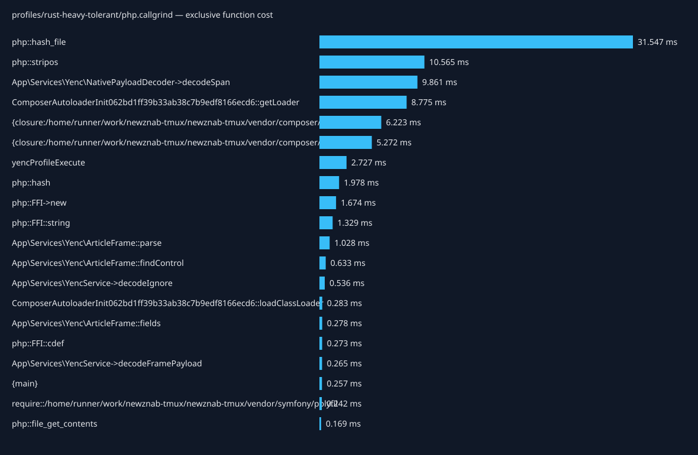
| Caller → callee | Calls | Inclusive cost (ms) |
|---|---|---|
| {main} → yencProfileExecute | 1 | 31.614 |
| {main} → php::hash_file | 14 | 31.547 |
| yencProfileExecute → App\Services\YencService->decodeIgnore | 101 | 26.686 |
| {main} → require::/home/runner/work/newznab-tmux/newznab-tmux/vendor/autoload.php | 1 | 17.422 |
| require::/home/runner/work/newznab-tmux/newznab-tmux/vendor/autoload.php → ComposerAutoloaderInit062bd1ff39b33ab38c7b9edf8166ecd6::getLoader | 1 | 17.332 |
| App\Services\YencService->decodeIgnore → App\Services\YencService->decodeFramePayload | 101 | 13.209 |
| App\Services\YencService->decodeFramePayload → App\Services\Yenc\NativePayloadDecoder->decodeSpan | 101 | 12.864 |
| App\Services\YencService->decodeIgnore → App\Services\Yenc\ArticleFrame::parse | 101 | 12.797 |
| App\Services\Yenc\ArticleFrame::parse → App\Services\Yenc\ArticleFrame::findControl | 303 | 11.251 |
| App\Services\Yenc\ArticleFrame::findControl → php::stripos | 202 | 10.565 |
| ComposerAutoloaderInit062bd1ff39b33ab38c7b9edf8166ecd6::getLoader → {closure:/home/runner/work/newznab-tmux/newznab-tmux/vendor/composer/autoload_real.php:37-43} | 51 | 8.245 |
| Composer\Autoload\ClassLoader->loadClass → {closure:/home/runner/work/newznab-tmux/newznab-tmux/vendor/composer/ClassLoader.php:575-577} | 23 | 7.177 |
| {main} → php::ReflectionClass->__construct | 9 | 3.841 |
| php::ReflectionClass->__construct → Composer\Autoload\ClassLoader->loadClass | 5 | 3.819 |
| App\Services\Yenc\NativePayloadDecoder->decodeSpan → php::FFI->new | 101 | 1.669 |
| App\Services\Yenc\NativePayloadDecoder->decodeSpan → php::FFI::string | 101 | 1.329 |
| yencProfileExecute → yencProfileLoadFixture | 1 | 1.228 |
| {closure:/home/runner/work/newznab-tmux/newznab-tmux/vendor/composer/ClassLoader.php:575-577} → include::/home/runner/work/newznab-tmux/newznab-tmux/app/Services/NNTP/NNTPService.php | 1 | 1.025 |
| include::/home/runner/work/newznab-tmux/newznab-tmux/app/Services/NNTP/NNTPService.php → Composer\Autoload\ClassLoader->loadClass | 1 | 1.019 |
| yencProfileLoadFixture → php::hash | 2 | 1.004 |
| yencProfileExecute → php::hash | 2 | 0.974 |
| {closure:/home/runner/work/newznab-tmux/newznab-tmux/vendor/composer/ClassLoader.php:575-577} → include::/home/runner/work/newznab-tmux/newznab-tmux/vendor/dariusiii/net_nntp/src/Client.php | 1 | 0.701 |
| include::/home/runner/work/newznab-tmux/newznab-tmux/vendor/dariusiii/net_nntp/src/Client.php → Composer\Autoload\ClassLoader->loadClass | 1 | 0.694 |
| {main} → App\Services\Yenc\DecoderFactory->make | 1 | 0.683 |
| {closure:/home/runner/work/newznab-tmux/newznab-tmux/vendor/composer/autoload_real.php:37-43} → require::/home/runner/work/newznab-tmux/newznab-tmux/vendor/nunomaduro/collision/src/Adapters/Phpunit/Autoload.php | 1 | 0.505 |
| App\Services\Yenc\ArticleFrame::parse → App\Services\Yenc\ArticleFrame::fields | 101 | 0.439 |
| App\Services\Yenc\DecoderFactory->make → App\Services\Yenc\NativePayloadDecoder->__construct | 1 | 0.388 |
| {main} → Composer\Autoload\ClassLoader->loadClass | 2 | 0.344 |
| require::/home/runner/work/newznab-tmux/newznab-tmux/vendor/nunomaduro/collision/src/Adapters/Phpunit/Autoload.php → Composer\Autoload\ClassLoader->loadClass | 1 | 0.298 |
| {closure:/home/runner/work/newznab-tmux/newznab-tmux/vendor/composer/autoload_real.php:37-43} → require::/home/runner/work/newznab-tmux/newznab-tmux/vendor/symfony/polyfill-mbstring/bootstrap.php | 1 | 0.290 |
Total exclusive profiled cost: 743.044 ms.
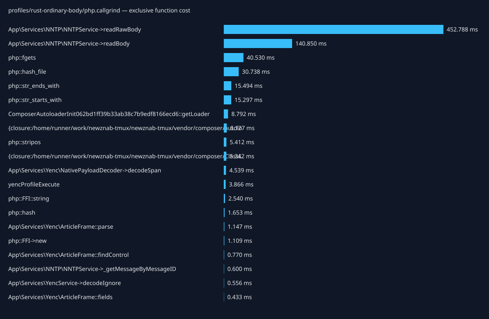
| Caller → callee | Calls | Inclusive cost (ms) |
|---|---|---|
| {main} → yencProfileExecute | 1 | 692.359 |
| yencProfileExecute → Tests\Support\YencNntpHarness->fetch | 101 | 684.036 |
| Tests\Support\YencNntpHarness->fetch → App\Services\NNTP\NNTPService->_getMessageByMessageID | 101 | 683.737 |
| App\Services\NNTP\NNTPService->_getMessageByMessageID → App\Services\NNTP\NNTPService->readBody | 101 | 682.654 |
| App\Services\NNTP\NNTPService->readBody → App\Services\NNTP\NNTPService->readRawBody | 101 | 524.200 |
| App\Services\NNTP\NNTPService->readRawBody → php::fgets | 420463 | 40.530 |
| {main} → php::hash_file | 14 | 30.738 |
| App\Services\NNTP\NNTPService->readBody → App\Services\YencService->decodeIgnore | 101 | 17.591 |
| {main} → require::/home/runner/work/newznab-tmux/newznab-tmux/vendor/autoload.php | 1 | 17.140 |
| require::/home/runner/work/newznab-tmux/newznab-tmux/vendor/autoload.php → ComposerAutoloaderInit062bd1ff39b33ab38c7b9edf8166ecd6::getLoader | 1 | 17.056 |
| App\Services\NNTP\NNTPService->readRawBody → php::str_ends_with | 420463 | 15.478 |
| App\Services\NNTP\NNTPService->readRawBody → php::str_starts_with | 420362 | 15.297 |
| Composer\Autoload\ClassLoader->loadClass → {closure:/home/runner/work/newznab-tmux/newznab-tmux/vendor/composer/ClassLoader.php:575-577} | 25 | 9.501 |
| App\Services\YencService->decodeIgnore → App\Services\YencService->decodeFramePayload | 101 | 8.641 |
| App\Services\YencService->decodeIgnore → App\Services\Yenc\ArticleFrame::parse | 101 | 8.237 |
| App\Services\YencService->decodeFramePayload → App\Services\Yenc\NativePayloadDecoder->decodeSpan | 101 | 8.189 |
| ComposerAutoloaderInit062bd1ff39b33ab38c7b9edf8166ecd6::getLoader → {closure:/home/runner/work/newznab-tmux/newznab-tmux/vendor/composer/autoload_real.php:37-43} | 51 | 8.023 |
| App\Services\Yenc\ArticleFrame::parse → App\Services\Yenc\ArticleFrame::findControl | 303 | 6.267 |
| App\Services\Yenc\ArticleFrame::findControl → php::stripos | 202 | 5.412 |
| App\Services\Yenc\NativePayloadDecoder->decodeSpan → php::FFI::string | 101 | 2.539 |
| yencProfileExecute → Composer\Autoload\ClassLoader->loadClass | 1 | 2.392 |
| {closure:/home/runner/work/newznab-tmux/newznab-tmux/vendor/composer/ClassLoader.php:575-577} → include::/home/runner/work/newznab-tmux/newznab-tmux/tests/Support/YencNntpHarness.php | 1 | 2.331 |
| include::/home/runner/work/newznab-tmux/newznab-tmux/tests/Support/YencNntpHarness.php → Composer\Autoload\ClassLoader->loadClass | 1 | 2.327 |
| {main} → php::ReflectionClass->__construct | 9 | 1.420 |
| php::ReflectionClass->__construct → Composer\Autoload\ClassLoader->loadClass | 3 | 1.410 |
| App\Services\Yenc\NativePayloadDecoder->decodeSpan → php::FFI->new | 101 | 1.104 |
| yencProfileExecute → php::hash | 3 | 0.987 |
| {closure:/home/runner/work/newznab-tmux/newznab-tmux/vendor/composer/ClassLoader.php:575-577} → include::/home/runner/work/newznab-tmux/newznab-tmux/app/Services/NNTP/NNTPService.php | 1 | 0.976 |
| include::/home/runner/work/newznab-tmux/newznab-tmux/app/Services/NNTP/NNTPService.php → Composer\Autoload\ClassLoader->loadClass | 1 | 0.971 |
| yencProfileExecute → yencProfileLoadFixture | 1 | 0.843 |
Total exclusive profiled cost: 76.449 ms.
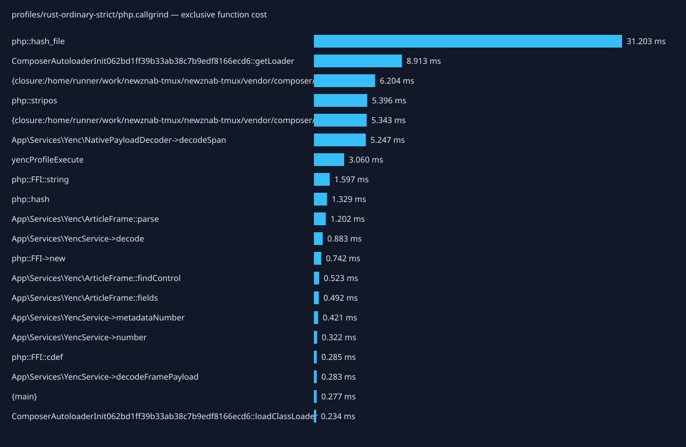
| Caller → callee | Calls | Inclusive cost (ms) |
|---|---|---|
| {main} → php::hash_file | 14 | 31.203 |
| {main} → yencProfileExecute | 1 | 22.391 |
| yencProfileExecute → App\Services\YencService->decode | 101 | 17.826 |
| {main} → require::/home/runner/work/newznab-tmux/newznab-tmux/vendor/autoload.php | 1 | 17.481 |
| require::/home/runner/work/newznab-tmux/newznab-tmux/vendor/autoload.php → ComposerAutoloaderInit062bd1ff39b33ab38c7b9edf8166ecd6::getLoader | 1 | 17.397 |
| ComposerAutoloaderInit062bd1ff39b33ab38c7b9edf8166ecd6::getLoader → {closure:/home/runner/work/newznab-tmux/newznab-tmux/vendor/composer/autoload_real.php:37-43} | 51 | 8.211 |
| App\Services\YencService->decode → App\Services\Yenc\ArticleFrame::parse | 101 | 8.005 |
| App\Services\YencService->decode → App\Services\YencService->decodeFramePayload | 101 | 7.957 |
| App\Services\YencService->decodeFramePayload → App\Services\Yenc\NativePayloadDecoder->decodeSpan | 101 | 7.603 |
| Composer\Autoload\ClassLoader->loadClass → {closure:/home/runner/work/newznab-tmux/newznab-tmux/vendor/composer/ClassLoader.php:575-577} | 23 | 7.241 |
| App\Services\Yenc\ArticleFrame::parse → App\Services\Yenc\ArticleFrame::findControl | 303 | 5.967 |
| App\Services\Yenc\ArticleFrame::findControl → php::stripos | 202 | 5.396 |
| {main} → php::ReflectionClass->__construct | 9 | 3.902 |
| php::ReflectionClass->__construct → Composer\Autoload\ClassLoader->loadClass | 5 | 3.888 |
| App\Services\Yenc\NativePayloadDecoder->decodeSpan → php::FFI::string | 101 | 1.596 |
| {closure:/home/runner/work/newznab-tmux/newznab-tmux/vendor/composer/ClassLoader.php:575-577} → include::/home/runner/work/newznab-tmux/newznab-tmux/app/Services/NNTP/NNTPService.php | 1 | 1.023 |
| include::/home/runner/work/newznab-tmux/newznab-tmux/app/Services/NNTP/NNTPService.php → Composer\Autoload\ClassLoader->loadClass | 1 | 1.017 |
| yencProfileExecute → yencProfileLoadFixture | 1 | 0.856 |
| App\Services\YencService->decode → App\Services\YencService->number | 202 | 0.796 |
| App\Services\Yenc\ArticleFrame::parse → App\Services\Yenc\ArticleFrame::fields | 202 | 0.745 |
| App\Services\Yenc\NativePayloadDecoder->decodeSpan → php::FFI->new | 102 | 0.737 |
| {closure:/home/runner/work/newznab-tmux/newznab-tmux/vendor/composer/ClassLoader.php:575-577} → include::/home/runner/work/newznab-tmux/newznab-tmux/vendor/dariusiii/net_nntp/src/Client.php | 1 | 0.700 |
| include::/home/runner/work/newznab-tmux/newznab-tmux/vendor/dariusiii/net_nntp/src/Client.php → Composer\Autoload\ClassLoader->loadClass | 1 | 0.693 |
| {main} → App\Services\Yenc\DecoderFactory->make | 1 | 0.686 |
| yencProfileLoadFixture → php::hash | 2 | 0.680 |
| yencProfileExecute → php::hash | 2 | 0.649 |
| {closure:/home/runner/work/newznab-tmux/newznab-tmux/vendor/composer/autoload_real.php:37-43} → require::/home/runner/work/newznab-tmux/newznab-tmux/vendor/nunomaduro/collision/src/Adapters/Phpunit/Autoload.php | 1 | 0.507 |
| App\Services\YencService->number → App\Services\YencService->metadataNumber | 202 | 0.473 |
| App\Services\Yenc\DecoderFactory->make → App\Services\Yenc\NativePayloadDecoder->__construct | 1 | 0.393 |
| {main} → Composer\Autoload\ClassLoader->loadClass | 2 | 0.340 |
Total exclusive profiled cost: 73.710 ms.
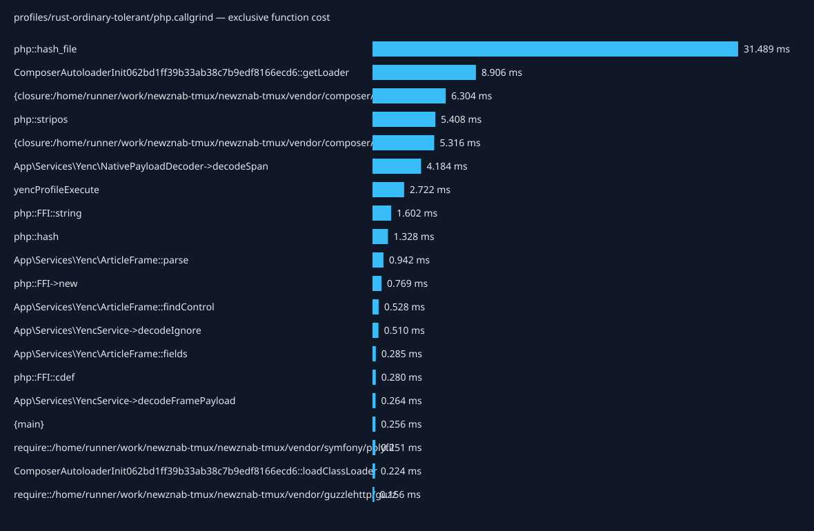
| Caller → callee | Calls | Inclusive cost (ms) |
|---|---|---|
| {main} → php::hash_file | 14 | 31.489 |
| {main} → yencProfileExecute | 1 | 19.233 |
| {main} → require::/home/runner/work/newznab-tmux/newznab-tmux/vendor/autoload.php | 1 | 17.607 |
| require::/home/runner/work/newznab-tmux/newznab-tmux/vendor/autoload.php → ComposerAutoloaderInit062bd1ff39b33ab38c7b9edf8166ecd6::getLoader | 1 | 17.519 |
| yencProfileExecute → App\Services\YencService->decodeIgnore | 101 | 14.985 |
| ComposerAutoloaderInit062bd1ff39b33ab38c7b9edf8166ecd6::getLoader → {closure:/home/runner/work/newznab-tmux/newznab-tmux/vendor/composer/autoload_real.php:37-43} | 51 | 8.365 |
| App\Services\YencService->decodeIgnore → App\Services\Yenc\ArticleFrame::parse | 101 | 7.445 |
| Composer\Autoload\ClassLoader->loadClass → {closure:/home/runner/work/newznab-tmux/newznab-tmux/vendor/composer/ClassLoader.php:575-577} | 23 | 7.181 |
| App\Services\YencService->decodeIgnore → App\Services\YencService->decodeFramePayload | 101 | 6.891 |
| App\Services\YencService->decodeFramePayload → App\Services\Yenc\NativePayloadDecoder->decodeSpan | 101 | 6.555 |
| App\Services\Yenc\ArticleFrame::parse → App\Services\Yenc\ArticleFrame::findControl | 303 | 5.985 |
| App\Services\Yenc\ArticleFrame::findControl → php::stripos | 202 | 5.408 |
| {main} → php::ReflectionClass->__construct | 9 | 3.906 |
| php::ReflectionClass->__construct → Composer\Autoload\ClassLoader->loadClass | 5 | 3.893 |
| App\Services\Yenc\NativePayloadDecoder->decodeSpan → php::FFI::string | 101 | 1.601 |
| {closure:/home/runner/work/newznab-tmux/newznab-tmux/vendor/composer/ClassLoader.php:575-577} → include::/home/runner/work/newznab-tmux/newznab-tmux/app/Services/NNTP/NNTPService.php | 1 | 1.000 |
| include::/home/runner/work/newznab-tmux/newznab-tmux/app/Services/NNTP/NNTPService.php → Composer\Autoload\ClassLoader->loadClass | 1 | 0.995 |
| yencProfileExecute → yencProfileLoadFixture | 1 | 0.866 |
| App\Services\Yenc\NativePayloadDecoder->decodeSpan → php::FFI->new | 101 | 0.765 |
| {main} → App\Services\Yenc\DecoderFactory->make | 1 | 0.701 |
| {closure:/home/runner/work/newznab-tmux/newznab-tmux/vendor/composer/ClassLoader.php:575-577} → include::/home/runner/work/newznab-tmux/newznab-tmux/vendor/dariusiii/net_nntp/src/Client.php | 1 | 0.687 |
| include::/home/runner/work/newznab-tmux/newznab-tmux/vendor/dariusiii/net_nntp/src/Client.php → Composer\Autoload\ClassLoader->loadClass | 1 | 0.680 |
| yencProfileLoadFixture → php::hash | 2 | 0.669 |
| yencProfileExecute → php::hash | 2 | 0.659 |
| {closure:/home/runner/work/newznab-tmux/newznab-tmux/vendor/composer/autoload_real.php:37-43} → require::/home/runner/work/newznab-tmux/newznab-tmux/vendor/nunomaduro/collision/src/Adapters/Phpunit/Autoload.php | 1 | 0.498 |
| App\Services\Yenc\ArticleFrame::parse → App\Services\Yenc\ArticleFrame::fields | 101 | 0.444 |
| App\Services\Yenc\DecoderFactory->make → App\Services\Yenc\NativePayloadDecoder->__construct | 1 | 0.394 |
| {main} → Composer\Autoload\ClassLoader->loadClass | 2 | 0.343 |
| require::/home/runner/work/newznab-tmux/newznab-tmux/vendor/nunomaduro/collision/src/Adapters/Phpunit/Autoload.php → Composer\Autoload\ClassLoader->loadClass | 1 | 0.293 |
| {closure:/home/runner/work/newznab-tmux/newznab-tmux/vendor/composer/autoload_real.php:37-43} → require::/home/runner/work/newznab-tmux/newznab-tmux/vendor/symfony/polyfill-mbstring/bootstrap.php | 1 | 0.291 |
Total exclusive profiled cost: 395.110 ms.
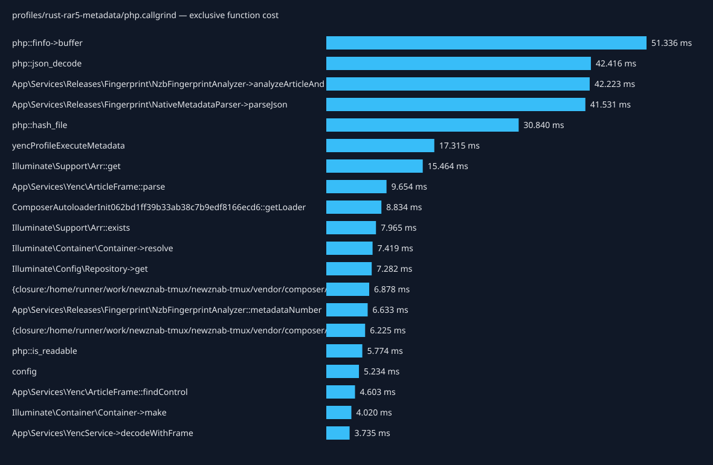
| Caller → callee | Calls | Inclusive cost (ms) |
|---|---|---|
| {main} → yencProfileExecute | 1 | 342.944 |
| yencProfileExecute → yencProfileExecuteMetadata | 1 | 342.624 |
| yencProfileExecuteMetadata → App\Services\Releases\Fingerprint\NzbFingerprintAnalyzer->analyzeArticleAndDecodedBytes | 501 | 321.000 |
| App\Services\Releases\Fingerprint\NzbFingerprintAnalyzer->analyzeArticleAndDecodedBytes → App\Services\Releases\Fingerprint\NativeMetadataParser->parseFormats | 501 | 53.692 |
| App\Services\Releases\Fingerprint\NativeMetadataParser->parseFormats → App\Services\Releases\Fingerprint\NativeMetadataParser->parseJson | 501 | 52.289 |
| App\Services\Releases\Fingerprint\NzbFingerprintAnalyzer->analyzeArticleAndDecodedBytes → php::finfo->buffer | 1002 | 51.336 |
| App\Services\Releases\Fingerprint\NativeMetadataParser->parseJson → php::json_decode | 2505 | 42.416 |
| App\Services\Releases\Fingerprint\NzbFingerprintAnalyzer->analyzeArticleAndDecodedBytes → App\Services\Releases\Fingerprint\NativeMetadataParser->parseNntpHeaders | 501 | 38.105 |
| App\Services\Releases\Fingerprint\NzbFingerprintAnalyzer->analyzeArticleAndDecodedBytes → App\Services\Releases\Fingerprint\NativeMetadataParser->parseYencFraming | 501 | 37.377 |
| App\Services\Releases\Fingerprint\NativeMetadataParser->parseNntpHeaders → App\Services\Releases\Fingerprint\NativeMetadataParser->parseJson | 501 | 36.531 |
| config → Illuminate\Config\Repository->get | 2505 | 36.201 |
| App\Services\Releases\Fingerprint\NativeMetadataParser->parseYencFraming → App\Services\Releases\Fingerprint\NativeMetadataParser->parseJson | 501 | 36.086 |
| App\Services\Releases\Fingerprint\NativeMetadataParser->parseJson → App\Services\Releases\Fingerprint\NativeMetadataParser->library | 1002 | 34.376 |
| App\Services\Releases\Fingerprint\NativeMetadataParser->parseJson → App\Services\Releases\Fingerprint\NativeMetadataParser->headerLibrary | 1002 | 31.271 |
| {main} → php::hash_file | 14 | 30.840 |
| Illuminate\Config\Repository->get → Illuminate\Support\Arr::get | 2505 | 28.230 |
| App\Services\Releases\Fingerprint\NativeMetadataParser->library → config | 1002 | 26.719 |
| App\Services\Releases\Fingerprint\NativeMetadataParser->headerLibrary → config | 1002 | 24.888 |
| App\Services\Releases\Fingerprint\NzbFingerprintAnalyzer->analyzeArticleAndDecodedBytes → App\Services\Releases\Fingerprint\NativeMetadataParser->compareNntpLinesToBody | 501 | 24.206 |
| config → app | 2505 | 22.775 |
| App\Services\Releases\Fingerprint\NzbFingerprintAnalyzer->analyzeArticleAndDecodedBytes → App\Services\Releases\Fingerprint\NativeMetadataParser->parseNntpBody | 501 | 22.371 |
| App\Services\Releases\Fingerprint\NativeMetadataParser->compareNntpLinesToBody → App\Services\Releases\Fingerprint\NativeMetadataParser->parseJson | 501 | 22.222 |
| App\Services\Releases\Fingerprint\NativeMetadataParser->parseNntpBody → App\Services\Releases\Fingerprint\NativeMetadataParser->parseJson | 501 | 20.982 |
| app → Illuminate\Container\Container->make | 2505 | 18.754 |
| App\Services\Releases\Fingerprint\NzbFingerprintAnalyzer->analyzeArticleAndDecodedBytes → App\Services\YencService->decodeWithFrame | 501 | 17.440 |
| {main} → require::/home/runner/work/newznab-tmux/newznab-tmux/vendor/autoload.php | 1 | 17.434 |
| require::/home/runner/work/newznab-tmux/newznab-tmux/vendor/autoload.php → ComposerAutoloaderInit062bd1ff39b33ab38c7b9edf8166ecd6::getLoader | 1 | 17.345 |
| App\Services\Releases\Fingerprint\NativeMetadataParser->parseJson → App\Services\Releases\Fingerprint\NativeMetadataParser->bodyLibrary | 501 | 15.878 |
| Illuminate\Container\Container->make → Illuminate\Container\Container->resolve | 2505 | 14.732 |
| App\Services\Releases\Fingerprint\NativeMetadataParser->bodyLibrary → config | 501 | 12.609 |
Searchable, zoomable sampled native stacks use separate optimized builds with debug information. Width represents folded CPU-clock period weights in nanoseconds, not sample counts or elapsed wall time. Event records are counted separately. Whole-process samples include setup and correctness verification. Unavailable or invalid captures cannot identify native hot paths.
| Workload | Capture status | Sample records | CPU-clock weight (ms) | Flamegraph |
|---|---|---|---|---|
| cpp-heavy-body | captured | 122 | 244.489 | Open flamegraph |
| cpp-heavy-strict | captured | 65 | 130.261 | Open flamegraph |
| cpp-heavy-tolerant | captured | 64 | 128.257 | Open flamegraph |
| cpp-ordinary-body | captured | 80 | 160.321 | Open flamegraph |
| cpp-ordinary-strict | captured | 52 | 104.208 | Open flamegraph |
| cpp-ordinary-tolerant | captured | 52 | 104.208 | Open flamegraph |
| rust-heavy-body | captured | 124 | 248.497 | Open flamegraph |
| rust-heavy-strict | captured | 64 | 128.257 | Open flamegraph |
| rust-heavy-tolerant | captured | 63 | 126.253 | Open flamegraph |
| rust-ordinary-body | captured | 87 | 174.349 | Open flamegraph |
| rust-ordinary-strict | captured | 58 | 116.232 | Open flamegraph |
| rust-ordinary-tolerant | captured | 57 | 114.228 | Open flamegraph |
| rust-rar5-metadata | captured | 121 | 242.485 | Open flamegraph |